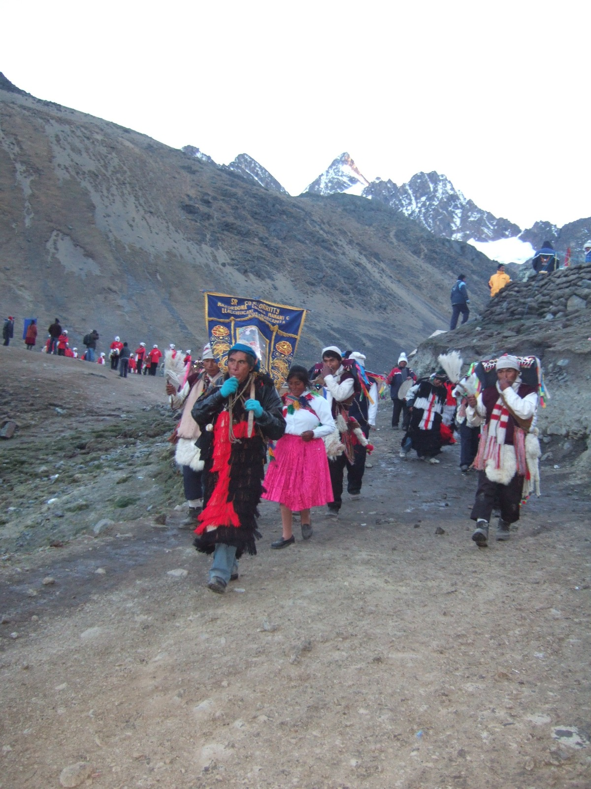
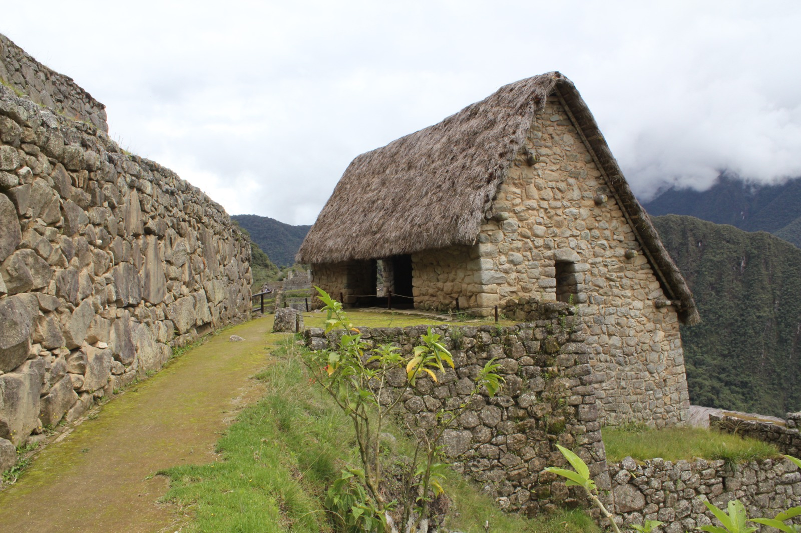
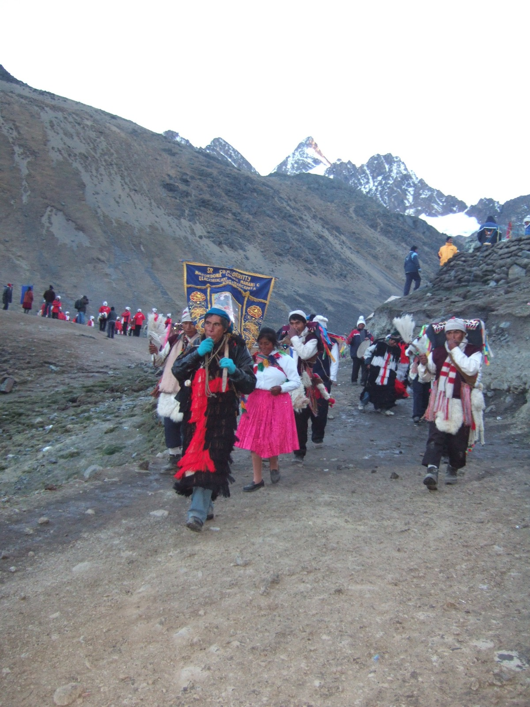
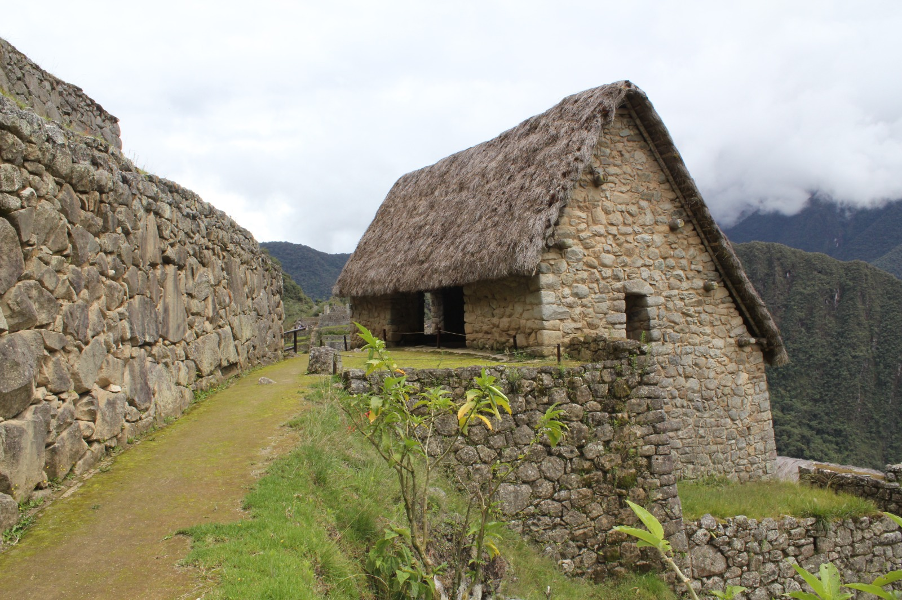
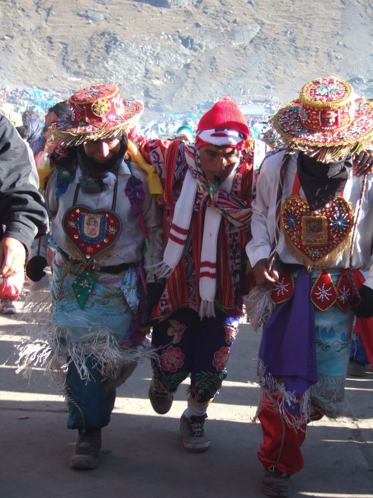
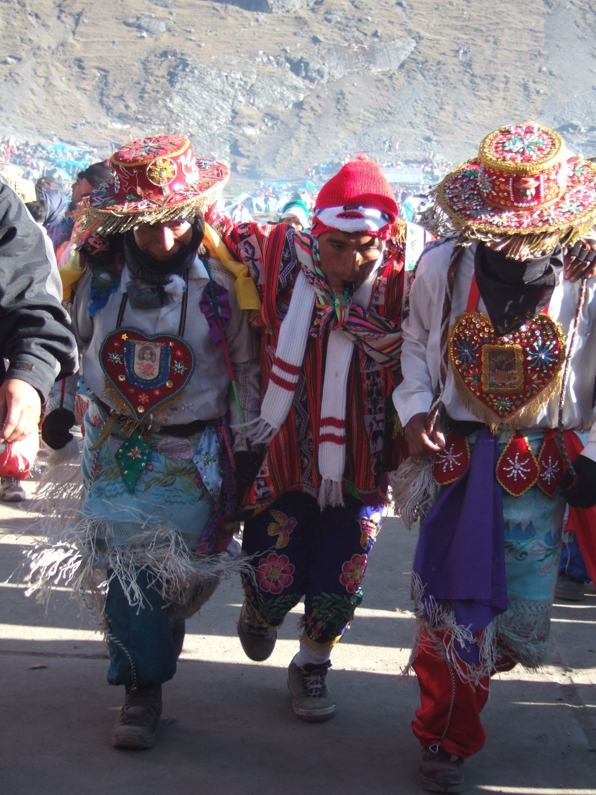
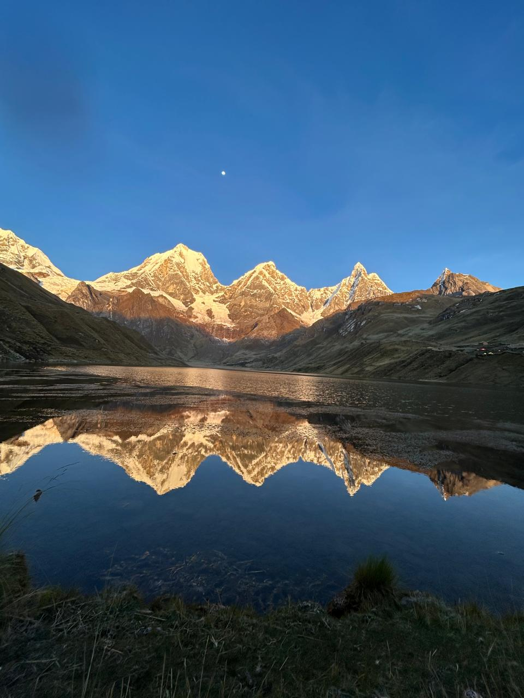
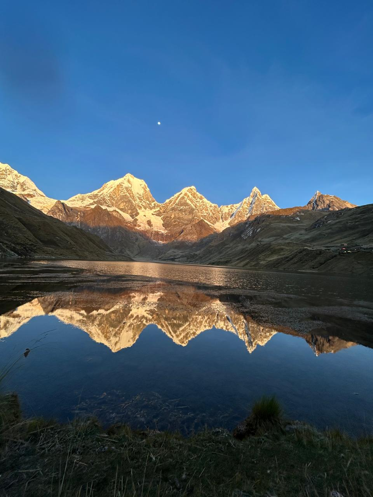

galería de experiencias


en inka legacy creemos que el per├║ se descubre a trav├®s de su gente. nuestra agencia, fundada por expertos locales, va m├ís all├í del turismo convencional. creamos viajes aut├®nticos y a medida, dise├▒ados para sumergir a viajeros de todo el mundo en la profunda historia y la vibrante belleza natural de nuestra tierra.
con 18 años de experiencia en el turismo andino, nuestra gerente general, antonia, lidera un equipo que comparte una misma pasión: el perú. nuestros guías certificados aseguran que cada viaje sea inolvidable porque aman esta tierra. por eso, nuestro orgullo más grande es nuestro compromiso con la sostenibilidad y el apoyo real a las comunidades que llamamos hogar.
nos une el deseo de brindar servicio de calidad, creando experiencias aut├®nticas que conecten a los viajeros con nuestra cultura, naturaleza e historia con un servicio personalizado.
Sum├®rgete en la magia de Cusco, la capital hist├│rica del Imperio Inca, descubre sus tesoros arqueol├│gicos, culturales y naturales.
Explora a fondo el "Ombligo del Mundo" incaico, visitando no solo los sitios principales sino tambi├®n lugares menos conocidos.
Descubre la majestuosidad del Ca├▒├│n del Colca, Arequipa la Ciudad Blanca y la imponente Ciudadela de Machu Picchu en un viaje inolvidable.
Desentraña los misterios de las Líneas de Nazca, descubre las Islas Ballestas y disfruta de las dunas de Ica en esta aventura única.
Sum├®rgete en la vibrante Amazon├¡a de Madre de Dios, observa el espect├ículo de los guacamayos en la Collpa y explora lagos y selva virgen en un viaje ecol├│gico inolvidable.
Trekking ├®pico de 5 d├¡as por paisajes andinos impresionantes, pasando por la Laguna Humantay y el paso Salkantay hasta Machu Picchu, alternativa al Camino Inca.
Descubre los secretos mejor guardados del Per├║ a trav├®s de las experiencias de nuestros viajeros
Sacsayhuamán no es solo una fortaleza, es un testimonio vivo de la ingeniería inca. Sus impresionantes muros de piedra, algunos con bloques que superan las 100 toneladas, desafían la comprensión moderna. En este artículo exploramos los secretos de construcción, la función ceremonial y las mejores horas para visitar este sitio arqueológico que domina Cusco.
San Blas es el rinc├│n m├ís encantador de Cusco, con calles empedradas, galer├¡as de arte y talleres de artesanos. Ideal para quienes buscan la esencia cultural y un caf├® con vistas a la ciudad imperial. Descubre los mejores lugares para comprar artesan├¡as aut├®nticas, disfrutar de la gastronom├¡a local y capturar las fotograf├¡as m├ís instagrameables.

La monta├▒a Arco├¡ris, con sus vibrantes colores minerales, es un espect├ículo natural a 5,200 metros. Sube en caballo o a pie y siente la conexi├│n con la Pachamama en este tesoro andino. Te contamos todo lo que necesitas saber para preparar tu visita: aclimataci├│n, equipo necesario, mejores ├®pocas para ir y c├│mo minimizar el impacto ambiental.
Miles de pozas de sal en terrazas blancas contrastan con el verde andino. Descubre c├│mo los incas recolectaban sal y prueba el proceso ancestral en este sitio milenario cerca de Cusco. Exploramos la historia de estas salineras preincaicas, el proceso de extracci├│n que se mantiene casi intacto y los beneficios de la sal rosada de Maras.
Experiencias ├║nicas a precios exclusivos - Reserva con anticipaci├│n
Precio por persona - Ahorra $994
Precio por persona - Ahorra $138
Precio por persona - Ahorra $587
Descubre por qu├® miles de viajeros eligen Inka Legacy. Basado en rese├▒as de Google.
la temporada seca (abril-octubre) es la temporada turística alta, con cielos despejados y un clima más estable, ideal para las visitas y fotografías. si prefieres evitar las multitudes y encontrar buen clima, abril o septiembre/octubre son excelentes opciones con menos turistas, paisajes verdes y posibilidad de encontrar ofertas y descuentos.
s├¡, la aclimataci├│n es muy importante. cusco est├í a 3,400 metros sobre el nivel del mar. descansar durante las primeras horas es vital, mantenerte muy hidratado con agua e infusiones como el t├® de coca, y comer comidas ligeras. se puede iniciar con un tour ligero de grado de dificultad bajo como el city tour.
no se requiere un nivel de condición física excepcional, pero sí es necesario tener una resistencia básica y buena salud para poder aclimatarse y disfrutar de las caminatas. para quienes planean hacer caminatas largas o trekking, como el camino inca, es recomendable tener una buena condición física cardiovascular y muscular y una flexibilidad adecuada.
Todos los traslados terrestres, vuelos internos, alojamiento en hoteles 3-4 estrellas, comidas especificadas durante los tours, gu├¡as certificados en espa├▒ol/ingl├®s, entradas a sitios arqueol├│gicos (como Machu Picchu), equipo de campamento (para tours de aventura) y asistencia 24/7. No incluye: vuelos internacionales, propinas para gu├¡as y asistentes, seguros de viaje personales, bebidas alcoh├│licas, comidas no mencionadas, equipo personal y gastos extras como souvenirs. .
Sí, se requiere un aviso por escrito. Se aplican penalizaciones o que el reembolso no sea posible, como gastos por reservas ya realizadas, especialmente si cancelas con poca antelación. Para evitar problemas, contacta a tu agencia. Política Clara: Cancelaciones hasta 30 días antes: 100% reembolso. 15-29 días: 50% reembolso. Menos de 14 días: No reembolsable. Reprogramaciones gratuitas hasta 45 días antes, sujeto a disponibilidad.
Puedes reservar f├ícilmente a trav├®s de nuestro formulario de consulta en el sitio web, por WhatsApp al +51 921 593 127, o por email a info@inkalegacy.com. Recomendamos reservar con al menos 3 meses de anticipaci├│n para tours populares como Machu Picchu debido a plazas limitadas. Una vez contactados, confirmaremos disponibilidad y enviaremos detalles de pago.
Pagos y reservas: Se aceptan pagos por transferencia bancaria internacional, tarjeta de cr├®dito (Visa/Mastercard con recargo del 3%), transferencias por Western Union. Para hacer la reserva se requiere un 50% del monto total, el saldo 30 d├¡as antes del tour a vuestra llegada. Para reservas de ├║ltimo minuto, pago completo del tour o programa.
Recomendamos ropa ligera en capas para cambios de clima, zapatos c├│modos para caminatas, protector solar, sombrero, botellas reutilizables de agua, repelente de insectos (para Amazon├¡a), documentos (pasaporte, seguro de viaje) y snacks energ├®ticos. Para trekkings como Salkantay, incluye bastones y saco de dormir. Proporcionamos lista detallada al reservar.
Sí, ofrecemos opciones vegetarianas, veganas y sin gluten en todos los tours. Indícanos tus preferencias al reservar para que nuestros cocineros preparen comidas adaptadas con ingredientes locales frescos. En tours como Perú Mágico, los almuerzos incluyen platos andinos como quinoa y vegetales orgánicos.
Nos enorgullecemos de ser una agencia sostenible: apoyamos la Fundaci├│n Inka para educaci├│n comunitaria, usamos transporte ecol├│gico, promovemos 'leave no trace' en trekkings y colaboramos con comunidades locales para turismo responsable. Cada tour contribuye al 5% de ganancias a proyectos andinos, preservando el legado inca.
La mayoría de nacionalidades (EE.UU., UE, etc.) no requieren visa para estancias de hasta 90 días. Verifica en el sitio oficial del Ministerio de Relaciones Exteriores de Perú. Asegúrate de tener pasaporte válido por 6 meses y prueba de salida. Te asistimos con requisitos de viaje.
 



este tour de 10 d├¡as te llevar├í a trav├®s de los lugares m├ís emblem├íticos de lima, cusco y huaraz, combinando historia, cultura y aventura en una experiencia inolvidable.
N├║mero de personas: peque├▒o grupo
Altitud: 0m
Ubicaci├│n: Lima, Per├║
llegada a lima, traslado del hotel hacia el museo larco 1.5 hrs de tour guiado para conocer las manifestaciones de arte precolombino para luego disfrutar de un tour gastron├│mico de 3 hrs en el hist├│rico barrio de barranco para disfrutar de una variedad de platos y dulces aut├®nticos peruanos. pernocte en hotel.
N├║mero de personas: 2-10
Altitud: 3400m
Ubicaci├│n: Cusco, Per├║
DIA 02.-Lima -Cusco- City Tour Vuelo matutino Lima-Cusco, instalación en el hotel, city tour de la ciudad por la tarde, grado de dificultad baja para aclimatarse a la altitud (3450 m.s.n.m). Explora la Catedral, Templo del Sol o Qoricancha y los sitios arqueológicos de Sacsayhuaman, Qenqo, Puca Pucara y Tambomachay, disfrutando de las vistas panorámicas hacia la ciudad
N├║mero de personas: 10
Altitud: 2800m
Ubicaci├│n: Valle Sagrado, Per├║
DIA 03.-Valle Sagrado de los Incas Uno de los destinos m├ís importantes de la regi├│n de Cusco que alberga pueblos tradicionales asentados desde la ├®poca inca. Tour de d├¡a completo Chincheros, Maras Moray , Salineras, Ollantaytambo y Pisac, aprendiendo sobre la agricultura inca, textiles y costumbres locales, almuerzo buffet en Urubamba.
N├║mero de personas: 10
Altitud: 2430m
Ubicaci├│n: Machu Picchu, Per├║
DIA 04.- Machu Picchu Tren turístico Ollantaytambo-Aguas Calientes hacia Machu Picchu; una obra de arte, arquitectura e ingeniería inca en perfecta armonía con la naturaleza, guiado por la ciudadela, explorando templos, terrazas. Retorno hacia la ciudad del Cusco.
N├║mero de personas: 2-10
Altitud: 5200m
Ubicaci├│n: Vinicunca, Per├║
Tour de un día, caminata de ascenso de 2 hrs hacia la laguna de aguas turquesas (4200
m.s.n.m.) Famosa por su hermoso paisaje, rodeada por el nevado Humantay que se encuentra
cerca del poblado de Mollepata en la comunidad de Soraypampa.
OPCION: Monta├▒a de 7 colores La monta├▒a Vinicunca (5200 m.s.n.m) atracci├│n muy popular
por sus franjas de colores debido a su composici├│n mineral├│gica, ofreciendo un
espectáculo maravilloso del valle.
N├║mero de personas: 2-10
Altitud: 3090m
Ubicaci├│n: Huaraz, Per├║
traslado hotel-aeropuerto, vuelo matutino cusco-huaraz con escala en lima, día libre para explorar por su cuenta la ciudad de huaraz
N├║mero de personas: 2-10
Altitud: 4000-5000m
Ubicaci├│n: Cordillera Huayhuash, Per├║
Trekking de 3 días en la Cordillera Huayhuash: Esta ruta es una de las más bellas e
impresionantes de la Cordillera Huayhuash.
Día 7-8-9: Queropalca a Laguna Carhuacocha, pasando por pueblos y paisajes andinos. Día
8: Laguna Carhuacocha a Vista Panoramica de las 3 Lagunas de Siulá. Día 9: Laguna
Carhuacocha a Sitio Arqueologico de Huanuco Pampa - Huaraz.
N├║mero de personas: 2-10
Altitud: 20m
Ubicaci├│n: Lima, Per├║
Hotel-Airport transfer, Huaraz-Lima flight, connection with international flight.
.jpeg) 

 

una experiencia completa de 10 d├¡as que te permitir├í explorar a fondo el "ombligo del mundo" incaico, visitando no solo los sitios principales sino tambi├®n lugares menos conocidos que te sorprender├ín.
N├║mero de personas: 10
Altitud: 0m
Ubicaci├│n: Lima, Per├║
Llegada a Lima, Traslado del hotel hacia el Museo Larco 1.5 hrs de tour guiado para conocer las manifestaciones de arte precolombino para luego disfrutar de un tour gastron├│mico de 3 hrs en el hist├│rico barrio de Barranco para disfrutar de una variedad de platos y dulces aut├®nticos peruanos; Pernocte en hotel.
N├║mero de personas: 2-10
Altitud: 3400m
Ubicaci├│n: Cusco, Per├║
dia 02.-lima -cusco- city tour vuelo matutino lima-cusco, instalación en el hotel, city tour de la ciudad por la tarde, grado de dificultad baja para aclimatarse a la altitud (3450 m.s.n.m). explora la catedral, templo del sol o qoricancha y los sitios arqueológicos de sacsayhuaman, qenqo, puca pucara y tambomachay, disfrutando de las vistas panorámicas hacia la ciudad.
N├║mero de personas: 10
Altitud: 2800m
Ubicaci├│n: Valle Sagrado, Per├║
Uno de los destinos m├ís importantes de la regi├│n de Cusco que alberga pueblos tradicionales asentados desde la ├®poca inca. Tour de d├¡a completo Chincheros, Maras Moray , Salineras, Ollantaytambo y Pisac, aprendiendo sobre la agricultura inca, textiles y costumbres locales, almuerzo buffet en Urubamba.
N├║mero de personas: 2-10 maximo
Altitud: 2000-4200m
Ubicaci├│n: Camino Inca, Per├║
Recomendamos que haga su reserva de viaje con varios meses de anticipaci├│n, ya que el
número de personas para ingresar al camino inca es limitado por día.
Día 06: Cusco -Km 82 Ollantaytambo- hasta Ayapata, pasando por Hatun Chaca y ruinas de
Llactapata con vistas de llamas
Día 07: Huayllabamba-Pacaymayo-Chaquicocha Cruce el Paso de la Mujer Muerta (el más
alto), descienda a Pacaymayo
Día 08: Pacaymayo-Wiñayhuayna: Paso Runkuracay ruinas circulares, a Wiñay Wayna
Día 08: Wiñayhuayna-Machu Picchu-Cusco: Puerta del Sol al amanecer, tour guiado por
Machu Picchu, explorando templos y terrazas.
N├║mero de personas: 10 Max
Altitud: 3400m
Ubicaci├│n: Cusco, Per├║
Que permiten aprender y deleitar platos de la zona, estas experiencias varían ofreciendo
platos específicos como ceviche o lomo saltado, hasta opciones vegetarianas, pisco sour
OPCION: caminata por el mercado artesanal del cusco y productos tipicos de la
zona.
N├║mero de personas: 2-10 maximo
Altitud: 5200m
Ubicaci├│n: Vinicunca, Per├║
Tour de un día en el valle rojo, especificamente en la montaña Palcoyo muy similar a la
monta├▒a de 7 colores, menos visitada pero no menos espectacular , lejos del turismo de
masa.
OPCION: Laguna Humantay- tour de un dia.
N├║mero de personas: 10 maximo
Ubicaci├│n: Cusco-Lima, Per├║
Hotel-Airport transfer, Cusco-Lima flight, connection with international flight.
Combina la magia inca de Cusco y Machu Picchu con la exuberante Amazonía de Puerto Maldonado en este tour de 10 días de eco-aventura.
N├║mero de personas: 1-10
Altitud: 0m
Ubicaci├│n: Lima, Per├║
Traslado del hotel hacia el Museo Larco 1.5 hrs de tour guiado de las manifestaciones de arte prehisp├ínico para luego disfrutar de un tour gastron├│mico de 3.5 hrs en el hist├│rico barrio de Barranco para disfrutar de una variedad de platos aut├®nticos peruanos. Pernocte en hotel.
N├║mero de personas: 1-10
Altitud: 3400m
Ubicaci├│n: Cusco, Per├║
Vuelo matutino Lima-Cusco, instalación en el hotel, city tour de la ciudad por la tarde, grado de dificultad baja para aclimatarse a la altitud (3450 m.s.n.m). Explora la Catedral, Templo del Sol o Qoricancha y los sitios arqueológicos de Sacsayhuaman, Qenqo, Puca Pucara y Tambomachay, disfrutando de las vistas panorámicas hacia la ciudad.
N├║mero de personas: 1-10
Altitud: 2800m
Ubicaci├│n: Valle Sagrado, Per├║
Uno de los destinos m├ís importantes de la regi├│n de Cusco que alberga pueblos tradicionales asentados desde la ├®poca inca. Tour de d├¡a completo Chincheros, Maras Moray, Salineras, Ollantaytambo y Pisac, aprendiendo sobre la agricultura inca, textiles y costumbres locales, almuerzo buffet en Urubamba.
N├║mero de personas: 1-10
Altitud: 2430m
Ubicaci├│n: Machu Picchu, Per├║
Tren turístico Ollantaytambo-Aguas Calientes hacia Machu Picchu una obra de arte, arquitectura e ingeniería inca en perfecta armonía con la naturaleza, guiado por la ciudadela, explorando templos, terrazas. Retorno hacia la ciudad del Cusco.
N├║mero de personas: 1-10
Altitud: 4300m
Ubicaci├│n: Waqrapucara, Per├║
Construida por los Canchis , una antigua fortaleza mejorada arquitectonicamente por los incas, evoca una siluita en forma de cuerno. Transporte guia y almuerzo.
N├║mero de personas: 1-10
Altitud: 200m
Ubicaci├│n: Puerto Maldonado, Per├║
Vuelo matutino desde Cusco a Puerto Maldonado (1 hora). Recepción en el aeropuerto y traslado en vehículo (30 min) seguido de un paseo en bote por el Río Madre de Dios (45 min) hasta el lodge en la Reserva Nacional de Tambopata. Almuerzo en el lodge. Tarde: caminata guiada por senderos primarios de selva para observar flora y fauna local, incluyendo monos y aves. Cena y pernocte en el lodge.
N├║mero de personas: 1-10
Altitud: 200m
Ubicaci├│n: Tambopata, Per├║
Desayuno temprano. Paseo en canoa por un peque├▒o arroyo hasta el Lago Sandoval (1 hora de caminata + canoa). Observaci├│n de caimanes, nutrias gigantes, monos y una gran variedad de aves. Almuerzo en el lodge. Tarde libre o opcional: visita a una plataforma de observaci├│n para avistamiento de aves. Cena y pernocte en el lodge.
N├║mero de personas: 1-10
Altitud: 200m
Ubicaci├│n: Tambopata, Per├║
Desayuno a las 4:30 AM. Traslado en bote (1 hora) a la Collpa de Guacamayos, un acantilado natural donde cientos de guacamayos y loros se reúnen para ingerir arcilla rica en minerales. Observa el vibrante espectáculo de colores y sonidos ("cantos") de las aves al amanecer. Retorno al lodge para desayuno. Mañana: caminata por senderos secundarios. Almuerzo, tarde libre. Cena y pernocte en el lodge.
N├║mero de personas: 1-10
Altitud: 200m
Ubicaci├│n: Tambopata, Per├║
Visita a la isla de los monos, al lmuerzo, Kayakismo, Avistamiento de fauna salvaje en la reserva Nacional de Tambopata.
N├║mero de personas: 1-10
Altitud: 0m
Ubicaci├│n: Lima, Per├║